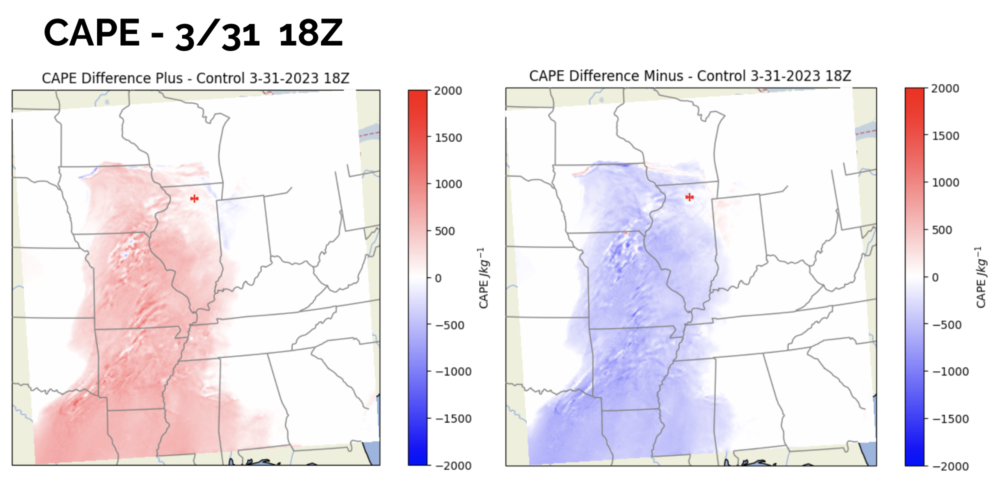
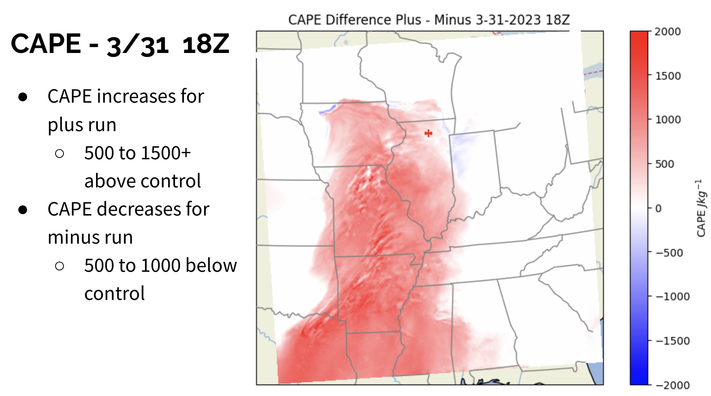
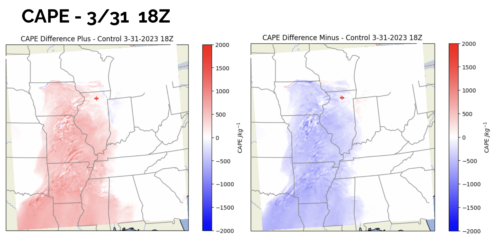
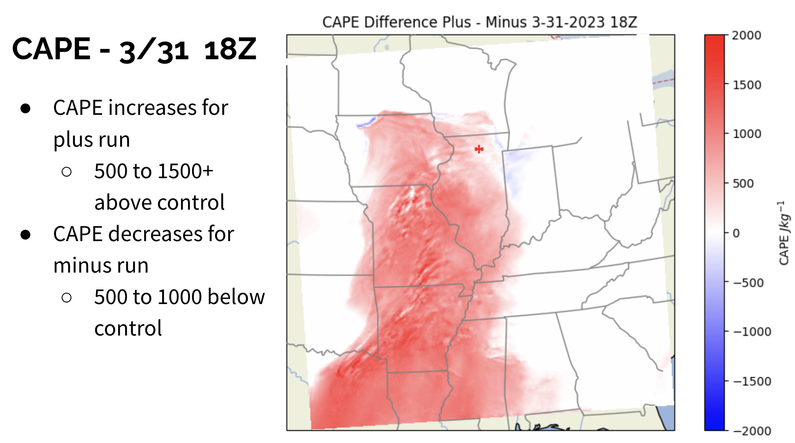

Case: March 31, 2023 Tornado Outbreak
- 3rd largest U.S. tornado outbreak: 142 tornadoes, including 22 in the LOT region (tied for most in 24 hours)
- 11 EF-3 tornadoes and 1 EF-4
- 90 mph straight-line winds
- 27 fatalities
- Severe environment: bulk shear 60–70 kts, MLCAPE >1500 J/kg


 


